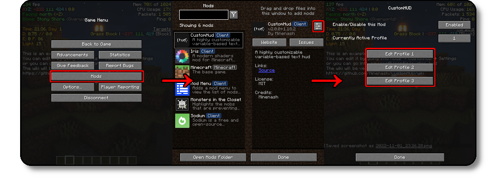

1. Accessing the Files
Note: If you don't have Mod Menu installed, I highly recommend you do so, as it makes
configuring pretty much all fabric mods easier.
Via your File Browser
The profiles are located at .minecraft/config/custom-hud/
Via Modmenu (Recommended)
Click on Mods → CustomHud → Settings Button → Edit Profile 1/2/3
